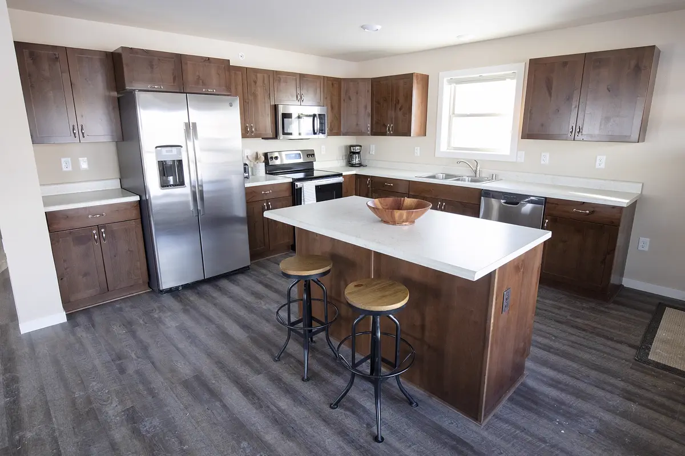
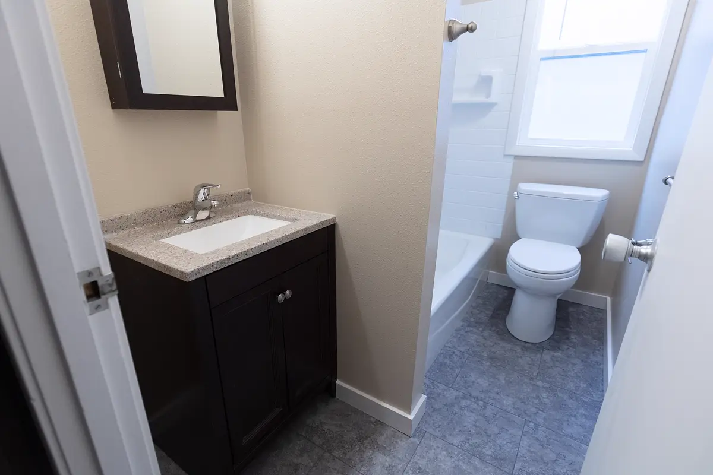
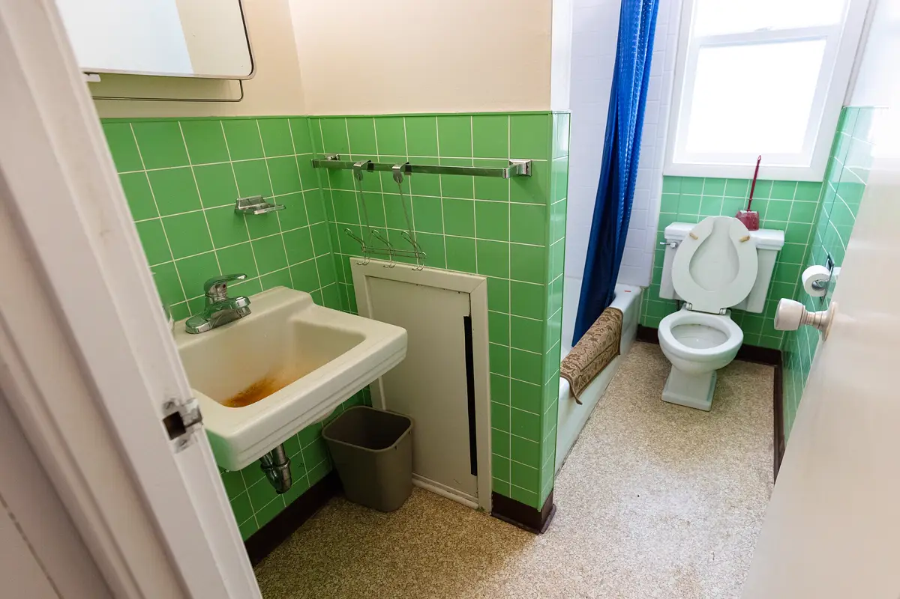
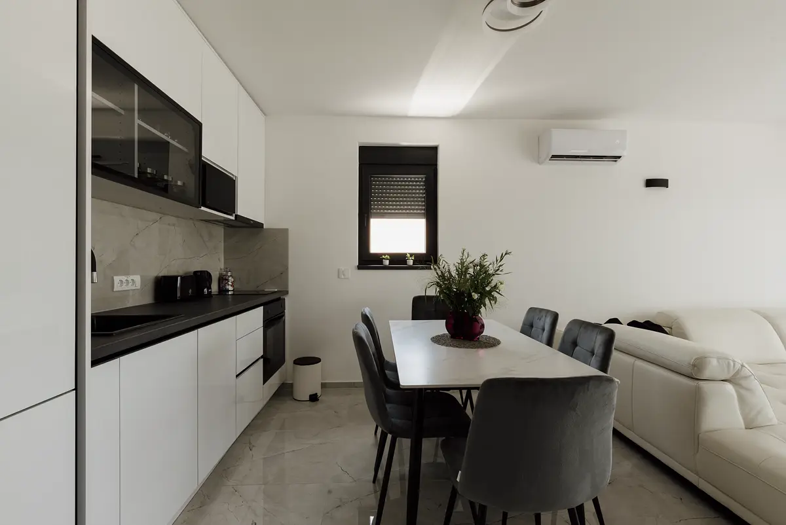
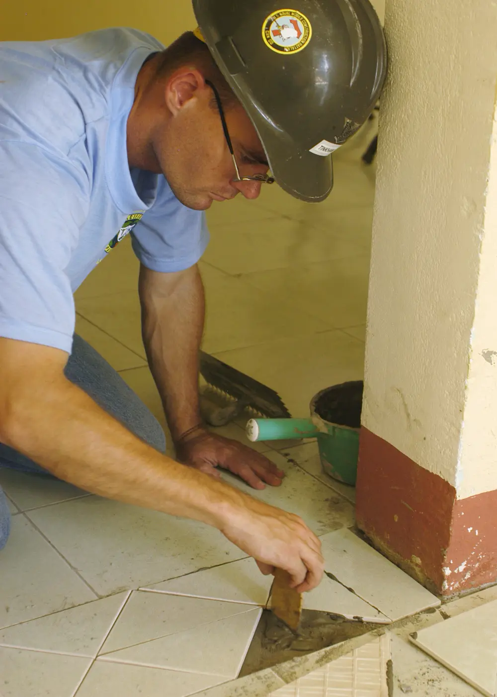
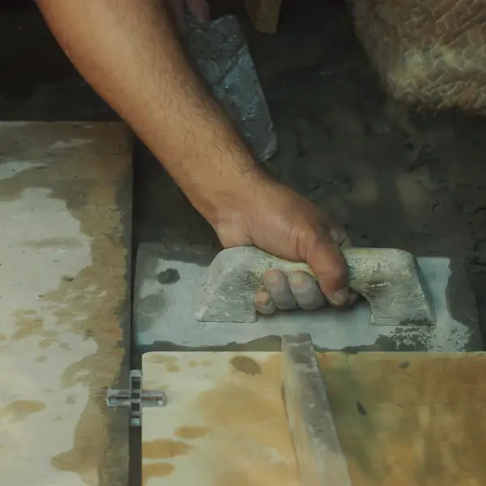

Obra acabada, casa habitable
Reformas de baños, cocinas y pisos en Oviedo y alrededores.
Antes y después
Arrastra la línea. Mismo baño, misma puerta.


- Qué se hizo
- Fuera azulejo, paredes alisadas, suelo, mueble de lavabo y sanitarios
- Plazo de obra
- Tres semanas
- Dónde
- Piso en La Corredoria
Obras recientes
Fotos de ejemplo: aquí van las de tus obras.



El suelo que no se ve es el que hace que no suene una baldosa dentro de cinco años.
Cuéntanos tu obraCómo trabajamos
Un responsable de principio a fin.
Visita
Medimos en tu casa y hablamos de lo que quieres gastar.
Presupuesto
Por partidas y por escrito, para que sepas qué pagas.
Calendario
Fecha de inicio, orden de gremios y fecha de entrega.
Obra
Foto del avance cada viernes. Los cambios se firman antes.
Entrega
Repasamos contigo cada remate antes del último pago.
Dónde trabajamos
El centro de Asturias, desde nuestra nave en Oviedo.
¿Tu concejo no está? Pregunta: según la obra, nos desplazamos.
- Oviedo La Corredoria, Buenavista, Centro, Montecerrao
- Siero Pola de Siero y Lugones
- Llanera Posada y Lugo de Llanera
- Gijón Centro, La Arena, El Llano
- Avilés y Castrillón
- Noreña y alrededores
- Mieres y el Caudal
- Langreo La Felguera y Sama
Pide presupuesto
Cuatro datos y te llamamos para ir a verlo.
¿Prefieres hablar? 985 000 002 o WhatsApp, y nos mandas fotos.